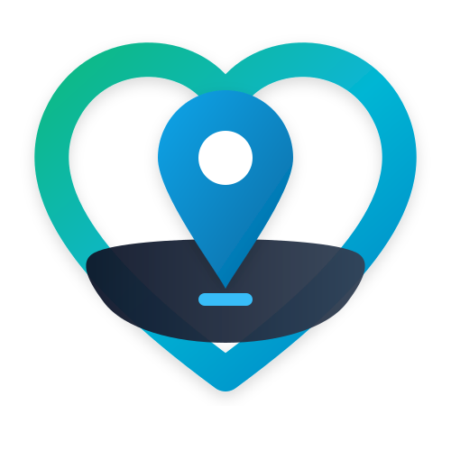
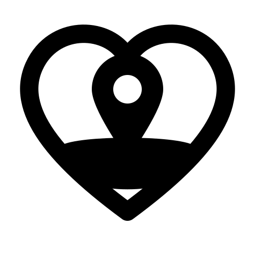

1. Logotipo Corporativo (Uso en Impresión / Packaging)
Paleta cromática: Emerald (#10B981), Cyan (#06B6D4), Medical Blue (#0284C7), Dark Slate (#0F172A).
Aplicación: Serigrafía en estuches, tarjetas de garantía, packaging y serigrafía en silicona.
2. Versión Monocromática Láser (Curvas 100% K)
Formato: Trazos vectoriales cerrados sin gradientes ni medios tonos (100% Black).
Compatibilidad: Software EzCad, LightBurn, máquinas de marcado láser Fibra / MOPA y CNC.
3. Isotipo / Emblema de Auxilio (Corazón + Geoubicación)


Significado: Corazón de soporte vital + Chincheta / Pin de geolocalización de rescate inmediato.
Uso: Relieve en pastilla central de la pulsera de silicona (debossed o embossed).
4. Distribución de Grabado en Placa Metálica 316L
Composición: Estrella de la vida médica (izquierda) + QR de alta resolución (centro) + Marca LC Salva / NFC (derecha).
Profundidad: 0.03 mm - 0.05 mm con acabado de recocido térmico oscuro (Black Annealing).